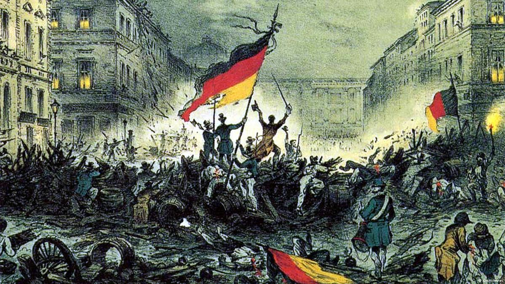
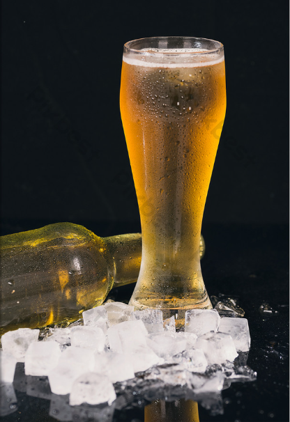

A história da Alemanha evoluiu de uma colcha de retalhos de tribos e principados no Sacro Império Romano-Germânico para uma potência unificada em 1871 sob a liderança prussiana de Otto von Bismarck. Após o colapso do império na Primeira Guerra Mundial e a instabilidade da República de Weimar, o país mergulhou na ditadura totalitária do nazismo, que culminou na Segunda Guerra Mundial e no Holocausto. Devastada e dividida entre Ocidente capitalista e Oriente socialista durante a Guerra Fria, a nação superou a separação com a histórica queda do Muro de Berlim em 1989 e a reunificação em 1990, consolidando-se hoje como a maior força econômica e política da União Europeia.

Fugir da prisão não é crime: Segundo a lei alemã, o desejo de ser livre é um instinto humano básico. Por isso, se um prisioneiro tentar escapar e for capturado, ele não terá sua pena aumentada por causa da fuga (desde que não danifique propriedades nem machuque ninguém no processo).
Cerveja é "comida": No estado da Baviera, a cerveja é oficialmente considerada um alimento básico e não apenas uma bebida alcoólica.
Autobahn: As famosas rodovias alemãs são conhecidas por não terem limite de velocidade estipulado em cerca de metade de sua extensão. O país também foi o berço do automóvel moderno.
Milhares de castelos: O país abriga mais de 20.000 castelos, sendo o famoso Neuschwanstein a maior inspiração para os castelos dos contos de fada da Disney.
